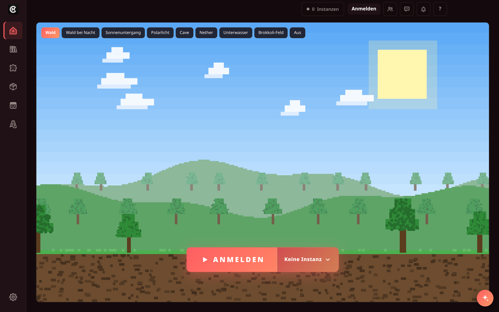

Bibliothek & Instanzen
Verwalte mehrere Minecraft-Versionen in einer Bibliothek – inklusive Horizon (Rust).
Minecraft Launcher
MaccaronyClient bündelt Bibliothek, Mods, Packs, Skins, Capes und Freunde in einem aufgeräumten, dunklen Launcher – gemacht von Maccarony.
für Windows

Features
Von Instanzen und Mods bis zu Skins, Capes und Freunden – MaccaronyClient hält die wichtigen Dinge an einem Ort.
Verwalte mehrere Minecraft-Versionen in einer Bibliothek – inklusive Horizon (Rust).
Installiere Mods, Resource Packs, Shader, Modpacks und Plugins – mit Modrinth-Integration.
Teile Packs per Share-Code mit Freunden – schnell, ohne umständliches Hin- und Herschicken.
Verwalte deine Skins und Minecraft-Capes übersichtlich in der Garderobe.
Erstelle eigene Capes – auch animiert als APNG oder Spritesheet.
Wechsle zwischen mehreren Accounts, ohne den Launcher neu einrichten zu müssen.
Behalte deine Freundesliste im Blick und erhalte Benachrichtigungen direkt im Launcher.
Ein integrierter KI-Helfer, der dir direkt im Launcher zur Seite steht.
Verbinde den Launcher mit Discord und bleib mit deiner Community verbunden.
Screenshots
Start, Bibliothek, Inhalte, Packs, Garderobe und mehr – klicke auf ein Bild, um es zu vergrößern.
Download
Lade MaccaronyClient herunter und richte deine Instanzen in wenigen Schritten ein.
FAQ
Der Launcher wird hier als Download angeboten, ohne dass auf dieser Seite ein Preis angegeben ist. Sobald es dazu offizielle Angaben gibt, findest du sie an dieser Stelle.
Ja. Du brauchst einen gültigen Minecraft: Java Edition Account, um zu spielen. Der Launcher ersetzt keine eigene Minecraft-Lizenz.
Aktuell ist ein Download für Windows vorgesehen. Unterstützung für weitere Systeme nennen wir hier, sobald sie feststeht.